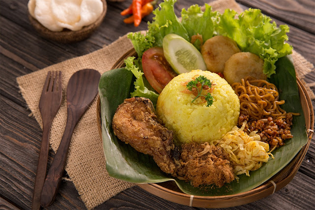

Nasi Kuning
Hidangan lezat berbahan dasar nasi ini berasal dari Pulau Jawa dan disajikan dalam berbagai perayaan atau upacara adat karena melambangkan rasa syukur. Selain di Jawa, Nasi Kuning juga bisa ditemukan di Bali, Manado, dan Banjar. Warna kuning pada masakan ini berasal dari pewarna alami kunyit sehingga tidak hanya kaya rasa tetapi juga aman dikonsumsi. Menurut masyarakat Jawa, warna kuning melambangkan emas yang berarti kekayaan.
Bahan-bahan yang perlu Anda siapkan adalah:
- 1 kg beras
- Kunyit potong 5 cm
- 2 cm potongan lengkuas
- 900ml santan
- 1 buah kelapa tua
- 2 lembar daun pandan
- 2 batang serai
- 4 lembar daun salam
- sepotong jahe berukuran 5 cm
- 5 bawang merah
- 4 sendok teh garam
Cara Membuat Nasi Kuning:
- 1. Cuci beras hingga bersih, lalu rendam dalam air.
- 2. Haluskan kunyit, jahe, lengkuas, bawang bombay, dan garam menjadi satu. Campur dengan santan lalu aduk rata.
- 3. Rebus santan.
- 4. Saring nasinya. Lalu masukkan santan ke dalam nasi. Tambahkan daun salam dan serai.
- 5. Didihkan nasi dengan api kecil. Aduk terus sampai airnya menguap. Sebelum matang sempurna, keluarkan daun salam dan serai dari nasi.
- 6. Siapkan panci untuk mengukus dan rebus air. Masukkan nasi ke dalam panci pengukus, lalu tambahkan daun pandan.
- 7. Kukus nasi hingga benar-benar matang.
- 8. Tunggu hingga nasi agak dingin. Sajikan hangat.